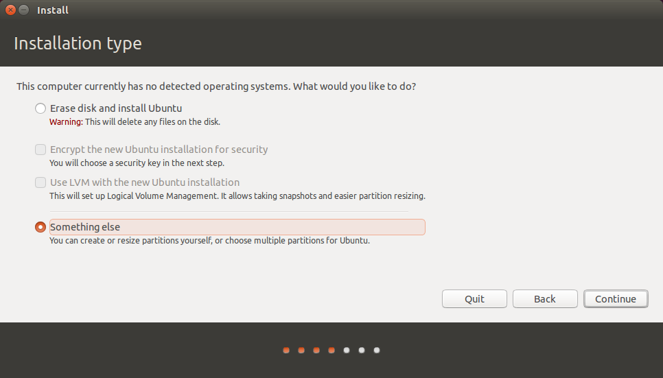
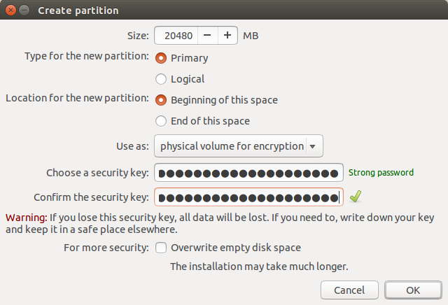
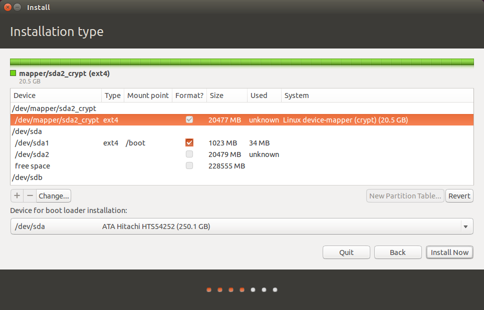
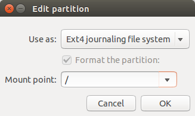
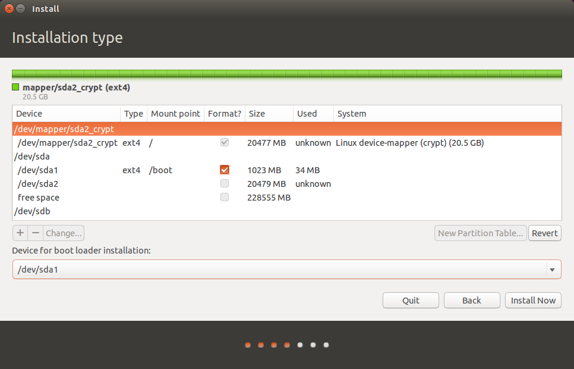
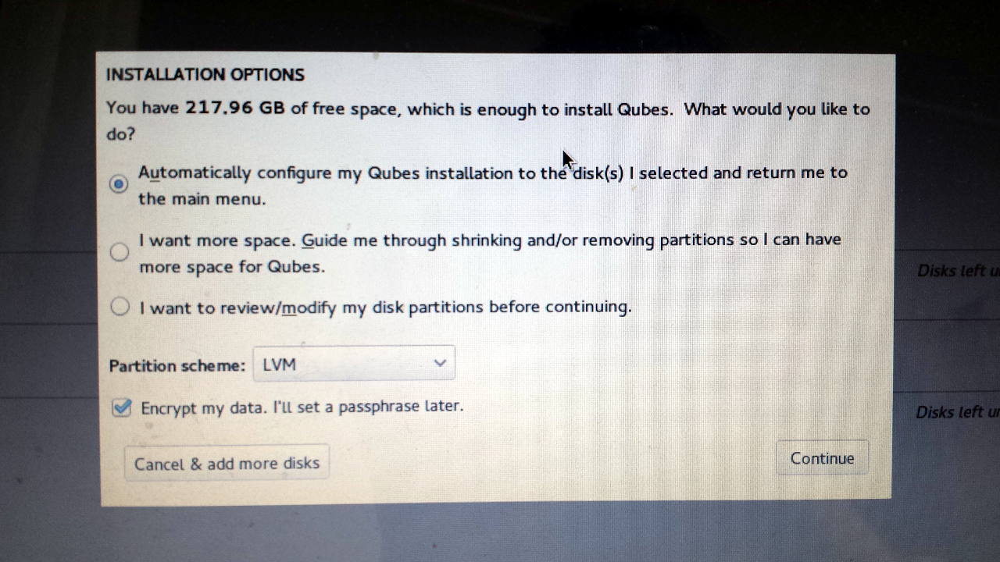
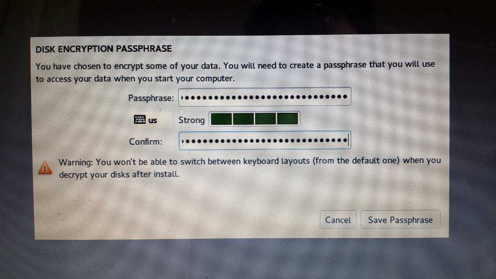

Dual-booting Qubes and Ubuntu with Encrypted Disks
Qubes is my preferred operating system, but occasionally you need to run something else. It’s hard to get certain hardware working the way you expect in Qubes, like webcams or non-disk USB devices. And Qubes VMs don’t support 3D acceleration, which you might occasionally need. You also can’t run VirtualBox inside of Qubes. You normally don’t have any reason to do this, except for very specific cases, like software development with Vagrant.
So here are instructions for how to dual-boot Qubes R2 rc1 and Ubuntu 14.04 LTS, using disk encryption for both. You should be able to adopt this same technique to dual-boot pretty much any two GNU/Linux distros with disk encryption. Keep in mind that if you’re booted into Ubuntu and you get owned, it’s possible for the attacker to then compromise Qubes. (You have to get really, really, really owned for an attacker who compromised Qubes to then compromise Ubuntu.)
To make things simpler, I’m not going to use a swap partition for Ubuntu. I have enough RAM in my computer that I don’t need to, and the GUI partitioning tools don’t make it simple to encrypt your swap with the same key that you use to encrypt your root partition.
Installing Ubuntu
First, boot to an Ubuntu install disk and start the installation like normal. When you get to the “Installation type” screen, choose “Something else”.

Delete all the partitions you already have on your disk. Then select the free space and click the “+” to create Ubuntu’s plaintext /boot partition. Make the size 1024 MB, type “Primary”, location “Beginning of this space”, use as ext4, and set the mount point to /boot. Then click ok.
![(ubuntu2.png)]
Now click the free space again and click the “+” to create Ubuntu’s encrypted root partition. For me, I’m going to make my Ubuntu partition only 20 GB, leaving the rest of the space for Qubes. So for size, I’m using 20480 MB. Set type to “Primary” and location to “Beginning of this space”. For use as, choose “physical volume for encryption”, and enter the disk encryption passphrase you want to use for Ubuntu twice. When you’re done, click ok.

Now your partition table should look like this. In /dev/sda you’ll have sda1, which is /boot, and sda2, which is “unknown”, and then a bunch of free space. But above that you’ll have /dev/mapper/sda2_crypt, which contains your encrypted partition.

Click on /dev/mapper/sda2_crypt and click Change. You can keep use as as ext4, and then select / as the mount point, and click ok.

Now you’ve set up Ubuntu’s partitions. This is important: before you start installing Ubuntu, under “Device for boot loader installation” choose /dev/sda1 instead of /dev/sda. When you install Qubes, the bootloader will be installed to /dev/sda, so it’s important that you put Ubuntu’s bootloader somewhere else.
Your partitioning should look like this:

Now click Install Now. It will pop up an error warning you that you’re not using a swap partition. You can click Continue. Then finish the rest of the steps, and wait for Ubuntu to install. When it’s done go ahead and restart.
Your computer won’t actually boot though, since you installed your Ubuntu bootloader to /dev/sda1 instead of /dev/sda. Instead of trying to boot into your newly installed Ubuntu, let’s install Qubes.
Installing Qubes
Boot to a Qubes install disk. Choose Install Qubes. Click “Installation Destination” and confirm that your hard drive is selected. Then click Done.
It should show you something like this: “You have 217.96 GB of free space, which is enough to install Qubes. What would you like to do?”

As long as it offers to install Qubes in the disk’s free space, the Qubes installer will handle the rest of the partitioning. Choose “Automatically configure my Qubes installation to the disk(s) I selected and return me to the main menu”, and make sure “Encrypt my data” is checked as well. Click Continue.
Type your Qubes disk encryption passphrase twice, and click Save Passphrase.

Then click Begin Installation, and wait for Qubes to install. When it’s done, reboot.
Fixing Grub
You’re not done quite yet. When you turn on your computer this time, it will automatically boot into Qubes. Now we need to add Ubuntu as a boot option.
When you boot into Qubes for the first time you’ll need to follow the setup wizard. Once this is done and you’ve logged in to Qubes, open a terminal in dom0 (in KDE, click the start button, System Tools > Konsole). Then edit /etc/grub.d/40_custom using vim (or nano):
sudo vim /etc/grub.d/40_custom
Add this to the bottom:
menuentry "Ubuntu" {
set root=(hd0,1)
chainloader +1
}
Then reinstall grub:
sudo grub2-mkconfig -o /boot/grub2/grub.cfg
sudo grub2-install /dev/sda
Then reboot the computer.
Wrapping Up
Now when turn on your computer, you immediately start at the grub that comes with Qubes, with the options:
- Qubes, with Xen hypervisor
- Advanced options for Qubes (with Xen hypervisor)
- Ubuntu
If you choose “Qubes, with Xen hypervisor” it asks for your Qubes encryption passphrase and boots into Qubes.
If you choose Ubuntu, you get chainloaded to /dev/sda1, where you installed Ubuntu’s grub. It then asks for Ubuntu’s encryption passphrase and then boots Ubuntu.